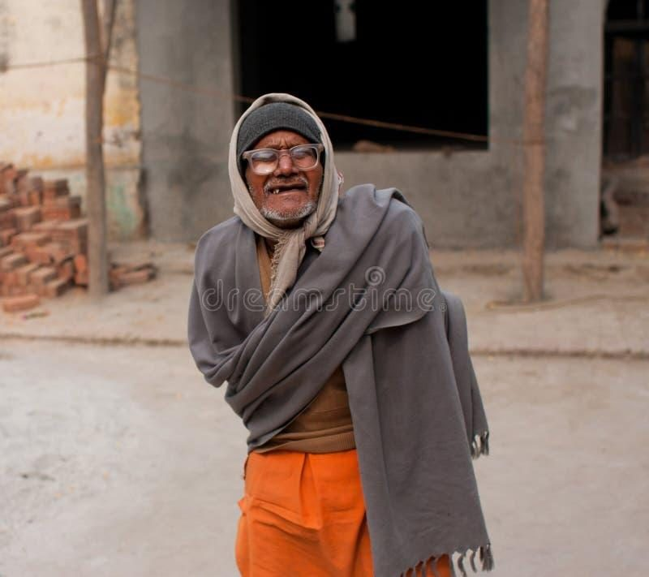
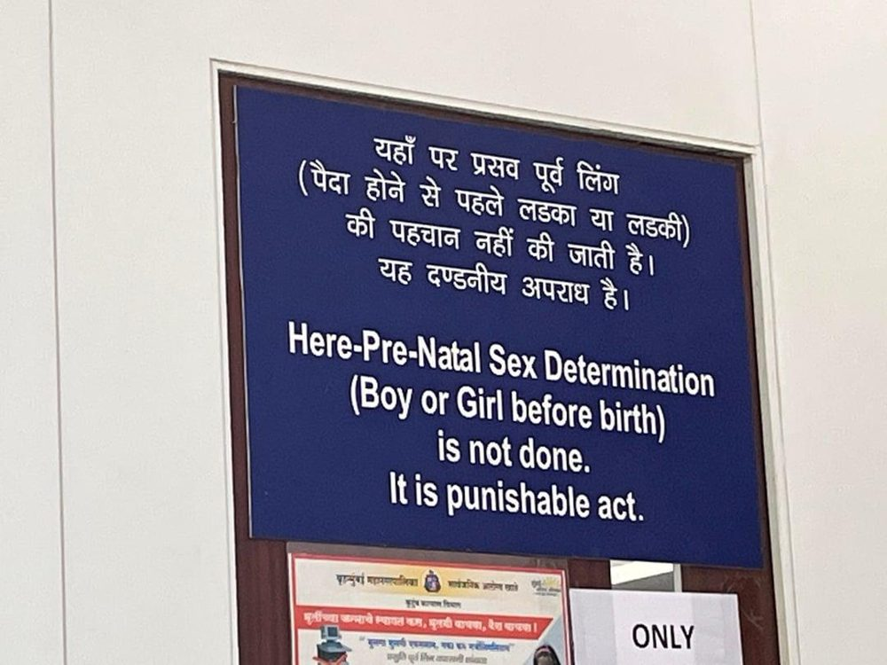
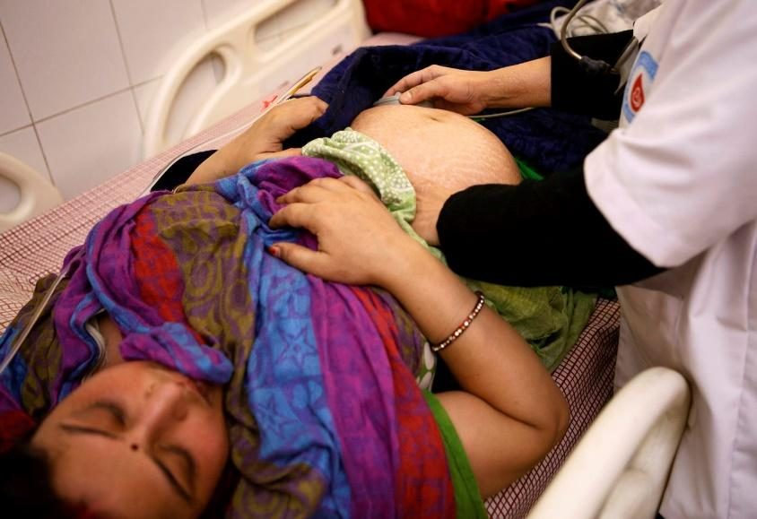
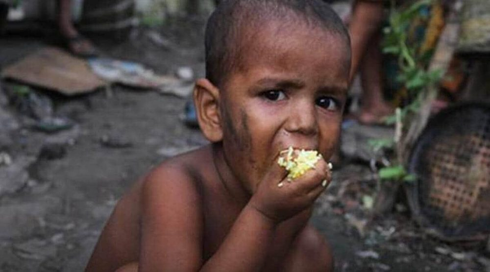
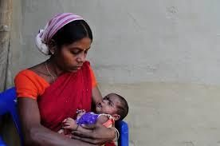
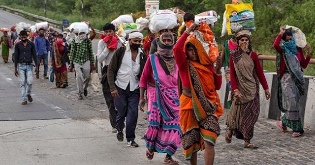

Population DynamicsHigh priority
Pair each issue with its numbers and the scheme or Act that answers it, and close on management over control.
Chapter map#
- Population dynamics
Growth
- Size
- Composition
- Fertility 2.0
Ageing
- 60+
- Problems
- Policy
Sex ratio
- 927, 933, 943
- DEMARU
- PCPNDT
Health
- Reproductive
- Infant mortality
- Malnutrition
Migration
- Marriage
- Male
- Reverse
Policy
- NPP 2000
- Family planning
- Management
Exam lens#
The story first#
In simple words#
- Growth is slowing: TFR is 2.0 (NFHS-5 and NFHS-6), below replacement; annual growth is below 1%.
- Ageing (60+), adverse sex ratio (927, 933, 943), mortality, reproductive health and malnutrition are the emerging issues.
- Migration (marriage, male, reverse) and population policy (NPP 2000) close the chapter: move from control to management.
| Term | In plain words |
|---|---|
| Sex ratio | Number of females per 1,000 males. |
| TFR | Total Fertility Rate, children per woman; replacement level is below 2.1. |
| DEMARU | Bose's term: Daughter-Eliminating, Male-Aspiring Rage for Ultrasound. |
| Stunting | Low height-for-age, reflecting chronic undernutrition. |
| Reverse migration | Return of migrants from cities to their place of origin. |
| Demographic dividend | Economic gain from a large working-age population. |
| Feminisation of ageing | Women live longer, so more elderly are widows with fewer resources. |
| PCPNDT Act, 1994 | Pre-Conception and Pre-Natal Diagnostic Techniques Act banning sex selection. |
1 · Population Dynamics#
- Population dynamics refers to the study of the size, structure, distribution, and changes in population over time, along with the social, economic, and cultural processes that influence these changes.
- It is not merely a statistical exercise but a crucial sociological concern, as population patterns shape and are shaped by social institutions such as family, economy, health systems, and the state.
- In a country like India, population dynamics assume special significance due to its large and diverse population, regional variations, and developmental challenges.
- Understanding population trends helps in planning for resources, addressing inequalities, and ensuring sustainable development.
2 · Population Size, Growth, Composition, and Distribution#
- Population size refers to the total number of people living in a given geographical area at a particular point in time.
- India, being one of the most populous countries in the world, presents both opportunities, such as a large workforce, and challenges, such as pressure on resources and infrastructure.
- Population growth indicates the rate at which this number increases or decreases over time.
- Historically, India has experienced rapid population growth, especially after independence, due to a decline in death rates while birth rates remained relatively high.
- However, in recent decades, the growth rate has begun to slow down, indicating a gradual demographic transition.
3 · Population composition#

- Population composition refers to the internal structure of the population, including characteristics such as age, sex, literacy, occupation, and rural-urban composition.
- One of the most important aspects is the age structure, which determines the dependency ratio and the availability of a working-age population.
- India is often described as having a “young population,” which can potentially lead to a demographic dividend if supported by adequate education, employment opportunities, and skill development.
- At the same time, variations in literacy levels, gender composition, and occupational structures reflect deeper social inequalities and developmental disparities.
- Population distribution refers to the spatial spread of people across different regions.
- In India, population distribution is highly uneven, influenced by factors such as availability of natural resources, climate, economic opportunities, and historical patterns of settlement.
- Fertile plains and urban-industrial regions tend to have high population density, while arid, hilly, and forested areas are sparsely populated.
- Urbanization has further influenced distribution patterns, with increasing migration towards cities in search of better livelihoods.
- Together, the size, growth, composition, and distribution of population provide a comprehensive picture of demographic realities and form the basis for analysing broader social and economic processes in society.
4 · Emerging issues#
- Population dynamics in India is accompanied by the emergence of complex social and demographic challenges.
- Issues such as ageing, adverse sex ratio, child and infant mortality, reproductive health concerns, and chronic malnutrition pose a challenge for policymakers and the wider society.
- These emerging concerns highlight that demographic change is closely intertwined with development, requiring not only policy interventions but also broader social transformation to ensure equity, well-being, and inclusive growth.
5 · Ageing#
- Ageing refers to the increasing proportion of elderly persons (60+) in the population.
- It is a global phenomenon driven by declining fertility and rising life expectancy.
- According to the WHO, globally, life expectancy at birth reached 73.3 years in 2024, an increase of 8.4 years since 1995.
- The number of people aged 60 and older globally is projected to increase from 1.1 billion in 2023 to 1.4 billion by 2030.
- In India, the increase in human life expectancy over the years has resulted not only in a very substantial increase in the number of older persons but in a major shift in the age groups of 80 and above.
- The demographic profile depicts that in the years 2000-2050, the overall population in India will grow by 55% whereas population of people in their 60 years and above will increase by 326% and those in the age group of 80+ by 700% - making it the fastest growing group.
6 · Why ageing is an emerging issue#


- The emergence of ageing as a major issue in India is closely linked to broader socio-economic transformations.
- Earlier, the joint family system provided economic, emotional, and social security to the elderly.
- However, with increasing mobility, individualism, and changes in occupational patterns, these traditional arrangements have weakened.
- At the same time, the informal nature of employment means most have limited access to pensions and post-retirement security, further aggravating the condition of elderly persons.
- Thus, ageing today is not only a demographic fact but a social problem involving issues of care, dependency, dignity, and inclusion.
7 · Major Problems of the Elderly in India#
- 1. Physical health issues: High prevalence of chronic diseases such as hypertension, diabetes, arthritis; inadequate geriatric care and dependency for daily activities.
- 2. Psychological well-being: Loneliness, depression, anxiety, and a sense of neglect, especially among urban elderly living alone.
- 3. Economic insecurity: Lack of stable income, poor pension coverage, and financial dependence due to dominance of informal sector employment.
- 4. Social isolation and loss of status: Decline of joint family system leads to marginalisation and reduced social role post-retirement.
- 5. Generation gap: Technological and cultural changes create communication barriers with younger generations.
- 6. Elder abuse: Instances of neglect, verbal, physical, and economic abuse within families.
- 7. Feminisation of ageing: Women face greater vulnerability due to longer life expectancy, widowhood, and lower access to resources.
- 8. Infrastructural gaps: Poor access to healthcare, transport, and institutional care, especially in rural areas.
- Elderly persons face several barriers in receiving adequate care: weakening family support due to nuclearization and migration; shortage and high cost of professional caregivers and institutional care; inadequate geriatric healthcare, particularly in rural areas; limited pension and health-insurance coverage; physical barriers in accessing services; and neglect and abuse within families.
- Elderly women, the poor, disabled and those living alone are particularly vulnerable.
- India's traditional family-based model of elder care is weakening faster than formal care systems are developing.
8 · Policy Response#
- Traditionally, elderly care in India has been provided through private networks, primarily the family.
- Within families, caregiving responsibilities are highly gendered, with women - especially daughters-in-law - bearing the major burden of physical and emotional care.
- However, with the decline of joint families and increasing female workforce participation, this model is under strain.
- In response, public support systems have gradually evolved.
- These include pension schemes, healthcare services, old-age homes, and policies like the National Policy for Older Persons (1999) and National Policy for Senior Citizens (2011).Civil society organisations also play an important role in providing community-based support, counselling, and awareness.
- Despite these efforts, challenges remain in terms of limited coverage, inadequate implementation, and lack of accessibility, particularly for the rural and poor elderly.
- Family caregivers frequently experience physical exhaustion, emotional stress, loss of employment or income, financial burden, and lack of proper training.
- Since caregiving remains highly feminized, women often bear a “double burden” of paid work and unpaid elder care.
- Professional caregivers, meanwhile, face inadequate training, low remuneration and weak regulation.
- Globally, the concept of active ageing has gained prominence, which emphasises optimizing opportunities for health, participation, and security to enhance quality of life in old age.
- It shifts the perspective from viewing the elderly as dependents to recognising them as active contributors to society.
- In the Indian context, active ageing is particularly relevant as many elderly persons continue to work, often out of necessity.
- Ensuring that such participation is dignified, safe, and meaningful requires policies that promote healthcare, financial inclusion, and social engagement.
- Policy responses in India increasingly recognise the need for an age-integrated society.
- Expanding social security coverage, strengthening geriatric healthcare, promoting community participation, and creating age-friendly infrastructure are key priorities.
- There is also a need to address gender disparities in caregiving and ensure support for caregivers themselves.
- Ageing has clearly emerged as a major issue in Indian society due to demographic transition combined with weakening traditional support systems and inadequate institutional mechanisms.
- Addressing this challenge requires a shift from a welfare-based approach to an empowerment-based approach, ensuring dignity, autonomy, and meaningful participation of the elderly.
9 · Sex Ratio in India#
- Sex ratio - the number of females per 1,000 males - is a crucial demographic indicator reflecting gender equity in a society.
- India has long exhibited an adverse sex ratio, indicative of deep-rooted gender bias and patriarchal norms.
- The 1991 Census recorded a sex ratio of 927 females per 1,000 males, which improved to 933 in 2001 and 943 in 2011; while projections estimate it to reach around 951 by 2036.
- Despite gradual improvement, the imbalance remains significant, especially in northern and western regions, highlighting persistent socio-cultural discrimination.
10 · Regional Variations#
- India exhibits significant regional variation in sex ratio, reflecting differences in socio-cultural practices and development levels:
- North India (Punjab, Haryana, Delhi, UP): Lowest sex ratios due to strong son preference and access to sex determination technology.
- South India (Kerala, Tamil Nadu, Andhra Pradesh, Karnataka): More balanced ratios due to better education, healthcare, and women’s empowerment.
- East & Northeast (Assam, Nagaland, Manipur, West Bengal): Moderate or favourable ratios; weaker dowry practices and matrilineal influences in some regions.
- Central India (MP, Chhattisgarh): Relatively low ratios due to socio-economic deprivation and gender bias.
- The adverse sex ratio in several regions has serious social implications.
- A shortage of women leads to a marriage squeeze, resulting in delayed marriages, cross-regional bride migration, trafficking, and even polyandry in certain areas.
- It can increase crimes against women, including harassment and violence.
- At a structural level, skewed sex ratios reinforce gender inequality, weaken women’s bargaining power, and distort family and kinship patterns.
- Thus, differential sex ratio is both a reflection and a reinforcement of gender injustice in society.
11 · Sex Ratio in DEMARU states#
- Ashish Bose coined the term DEMARU to refer to the Daughter-Eliminating, Male-Aspiring Rage for Ultrasound.
- The concept of DEMARU states (Punjab, Haryana, Gujarat, Himachal Pradesh) highlights a paradox -declining child sex ratios in relatively prosperous regions.
12 · Ultrasound and son preference#


- Bose observed that the spread of ultrasound technology during the 1980s and 1990s gave families the ability to know the sex of the foetus early in pregnancy.
- In societies where the birth of a male child was culturally preferred, this led to a disturbing trend-selective abortion of female foetuses.
- Hence, DEMARU symbolised the misuse of modern technology and the persistence of gender bias in relatively advanced regions.
- DEMARU phenomenon thus drew attention to a concerning reality: economic development alone does not automatically translate into social progress and gender equality.
- In fact, in these states, modernization and medical access were ironically used to perpetuate patriarchal preferences.
- According to Bose, female foeticide becomes prevalent when the following three preconditions coexist:
- 1. Availability of technology (ultrasound) - for prenatal sex determination.
- 2. Clients’ capacity to pay and access technology - families possess both financial means and physical access to diagnostic clinics.
- 3. Cultural preference for sons - a patriarchal mindset that devalues daughters and creates social pressure to produce a male heir.
- When all three factors are present simultaneously, the likelihood of female foeticide increases dramatically.
- In poorer or remote regions where ultrasound is not available or affordable, discrimination against girls tends to occur post-birth, through neglect or malnutrition, rather than before birth.
- The DEMARU concept thus forces policymakers and sociologists to look beyond economic indicators and examine the cultural, ethical, and technological dimensions of gender imbalance.
- It exposes a grim irony: that rising prosperity, education, and urbanization may actually worsen the sex ratio unless they are accompanied by attitudinal change and gender sensitization.
- Medical establishments are legally prohibited from conducting foetal sex determination by ultrasound machines under the PCPNDT Act, 1994
13 · Socio-Cultural Factors Contributing to Adverse Sex Ratio#
- 1. Son preference: Deep-rooted patriarchal values associate sons with lineage continuity, financial security, and religious rites.
- 2. Dowry system: Perception of daughters as economic liabilities leads to discrimination from birth.
- 3. Female infanticide and foeticide: Easy availability of sex determination technology has led to selective abortions despite the PCPNDT Act.
- 4. Differential healthcare: Girls receive less medical attention, nutrition, and immunization than boys.
- 5. Economic dependency of women: Limited participation in formal labour markets reduces their perceived value in the household economy.
- 6. Social insecurity: In some communities, fear for women’s safety and social stigma around female sexuality can lead to less preference for daughters.
14 · Measures to Address Adverse Sex Ratio#
- 1. Strict implementation of PCPNDT Act: The Pre-Conception and Pre-Natal Diagnostic Techniques (PCPNDT) Act, 1994 was enacted to prevent the misuse of technology for sex determination and female foeticide.
- Its implementation is crucial because technological advancement, combined with patriarchal values, has intensified gender discrimination.
- The Act regulates diagnostic centres and prohibits sex selection, but its effectiveness depends on strict enforcement, monitoring, and social awareness.
- 2. Promoting female literacy and education: Educated women have higher autonomy, lower fertility, and better survival prospects for daughters.
- 3. Awareness campaigns: Initiatives like Beti Bachao Beti Padhao, Save the Girl Child, and community-level IEC programs to reshape social attitudes.
- 4. Economic empowerment of women: Enhancing women’s access to property, jobs, and credit strengthens their position in the family.
- 5. Civil society participation: NGOs and community-based groups can mobilize local opinion and monitor enforcement.
- India’s sex ratio reflects a deeper socio-cultural reality shaped by patriarchy, economic structures, and technological misuse.
- While improvements are visible, persistent regional disparities - especially in the DEMARU belt - show that development alone is insufficient.
- A sustainable correction requires legal enforcement, economic empowerment, and, most importantly, transformation in societal attitudes towards valuing daughters equally.
15 · India’s Population Pyramid#
- A population pyramid represents the age and sex composition of a population, usually showing the proportion of males and females across different age groups.
- Its shape provides important information about fertility, mortality, dependency, labour supply, and future population trends.
- India’s population pyramid is gradually changing from a broad-based expansive pyramid towards a more middle-heavy structure.
- Declining fertility is narrowing the base of the pyramid, while the large population in the working-age groups has produced a broad middle.
- At the same time, increasing life expectancy is gradually expanding the elderly population at the top. Thus, India simultaneously possesses a large demographic dividend and is moving towards an era of accelerated population ageing.
- The narrowing base reflects declining fertility, while the relatively broad working-age categories indicate the continuing demographic dividend.
- The gradual widening of older age groups points towards the future challenge of ageing.
- However, the demographic transition is regionally uneven: several southern and western states are ageing relatively rapidly, while some northern and central states continue to have younger populations and comparatively higher fertility.
16 · Policy Measures for Sustainable Population Dynamics#
- 1. Harness demographic dividend: India must invest in quality education, skill development, healthcare, and productive employment so that its large working-age population becomes an economic asset rather than a source of unemployment and social distress.
- 2. Prepare for population ageing: Expansion of pensions, geriatric healthcare, long-term care services, age-friendly infrastructure, and community-based elder care is necessary as the proportion of elderly increases.
- 3. Shift from population control to population management: Since fertility has declined substantially and the national TFR is below replacement level, coercive numerical population-control measures are increasingly inappropriate.
- Policy should emphasize reproductive choice, health, and informed family planning.
- 4. Address regional demographic differences: A uniform population policy is unsuitable for India.
- Higher-fertility regions require greater investment in female education, delayed marriage, healthcare, employment, and contraception, while low-fertility states increasingly require policies addressing ageing and future labour shortages.
- 5. Promote gender-balanced population development: Improving women’s education, employment, property rights, reproductive autonomy, and strict action against sex selection are essential for correcting adverse sex ratios and improving overall demographic outcomes.
- 6. Manage migration: Population redistribution through migration requires portable social protection, affordable housing, improved urban infrastructure, and balanced regional development so that migration remains a matter of opportunity rather than distress.
- Thus, sustainable population dynamics require India to move beyond the older concern with merely reducing population growth towards a broader approach balancing fertility, ageing, migration, gender equity, and human development.
17 · Women’s Reproductive Health#
- Sexual and reproductive health (SRH) refers to a state of complete physical, emotional, mental, and social well-being in matters relating to sexuality and reproduction, and not merely the absence of disease.
- It implies that individuals are able to have a safe and satisfying sex life, possess the capability to reproduce, and have the freedom to decide if, when, and how often to do so.
18 · Reproductive health and ICPD Cairo 1994#


- The concept, recognised at the International Conference on Population and Development (Cairo, 1994), also includes access to information, quality healthcare services, and protection from coercion, discrimination, and violence.
- In India, women’s reproductive health has emerged as a critical concern due to the intersection of poverty, gender inequality, and inadequate healthcare infrastructure.
- While there has been improvement in SRH over time, multiple structural and socio-cultural barriers continue to limit women’s reproductive autonomy and well-being.
19 · Major Challenges and Emerging Concerns#
- Some important concerns related to sexual and reproductive health in India are:
- 1. High maternal mortality: Though maternal mortality ratio in India has declined, unsafe deliveries and inadequate emergency obstetric care continue to claim many lives.
- 2. Early marriage and adolescent pregnancy: Early marriage leads to premature motherhood, increasing the risk of maternal and infant mortality, anemia, and poor educational attainment among girls.
- 3. Unmet need for contraception: Many women lack access to safe and affordable contraceptive options or face social pressure against their use, resulting in unplanned pregnancies.
- 4. Unsafe abortions: Due to lack of awareness or access to safe abortion facilities, many women resort to unqualified practitioners, leading to health complications and even death.
- 5. Menstrual health issues: Taboos, poor menstrual hygiene, and lack of education on menstrual health affect physical well-being and school attendance of girls.
- 6. Reproductive coercion: Domestic violence, marital rape, and forced sterilizations undermine women’s bodily autonomy.
- These challenges reflect that reproductive health in India is not only a medical issue but deeply embedded in social structures such as patriarchy and gendered norms.
20 · Policy Interventions#
- National Population Policy, 2000: Focus on universal access to reproductive healthcare and contraception.
- National Health Mission: Schemes like Janani Suraksha Yojana promote institutional deliveries and maternal care.
- Medical Termination of Pregnancy Act (1971, amended 2021): Expands access to safe abortion services, including for unmarried women.
- Menstrual Hygiene Scheme: Promotes awareness and access to sanitary products.
21 · Gaps and Measures for Improvement#
- 1. Strengthening healthcare infrastructure: Inadequate health infrastructure, particularly in rural areas, leads to poor antenatal, natal, and postnatal care.
- Access to quality healthcare services needs to be improved in rural and underserved areas.
- 2. Focus on adolescent health: Address teenage pregnancy and reproductive awareness.
- 3. Male involvement: Reproductive health is often seen as a “women’s issue”, leading to low awareness and involvement of men in family planning and reproductive responsibilities.
- 4. Comprehensive sex education: Promote informed and responsible behaviour.
- Women’s reproductive health in India remains a key development concern.
- Addressing them requires moving beyond a narrow population control approach towards a rights-based, gender-sensitive framework that ensures autonomy, informed choice, and universal access to healthcare.
22 · Child and Infant Mortality#
- Infant mortality refers to deaths of children below one year of age, while child mortality refers more broadly to mortality among young children, commonly measured through the under-five mortality rate.
- India has witnessed a substantial decline in both due to improvements in immunisation, institutional deliveries, maternal and neonatal healthcare, nutrition and disease control.
- However, considerable regional and socio-economic disparities persist.
- Major causes include:
- 1. Maternal malnutrition and poor maternal health increase the risk of low birth weight and complications during pregnancy and childbirth.
- 2. Premature birth and low birth weight make infants particularly vulnerable during the neonatal period.
- 3. Inadequate healthcare, including poor antenatal care, unsafe deliveries and delayed treatment, contributes to preventable deaths.
- 4. Infections leading to diarrhoea and pneumonia, due to unsafe drinking water and inadequate sanitation, remain important causes.
- 5. Socio-economic inequalities: Poverty, low maternal education and inadequate access to healthcare increase child mortality.
- Rural populations and disadvantaged castes and tribes often experience greater vulnerability.
- Thus, child and infant mortality are not merely medical phenomena but also indicators of social inequality and development.
- Gender discrimination in nutrition and healthcare, caste and class inequalities, rural-urban disparities, and maternal education significantly influence children's chances of survival.
- Measures: The National Health Mission , promotion of institutional deliveries and maternal care, universal immunisation, improved neonatal healthcare, nutrition programmes such as POSHAN Abhiyaan , and expansion of safe drinking water and sanitation have contributed to declining mortality.
- Further progress requires strengthening primary healthcare, maternal nutrition and education, and reducing social and regional inequalities in access to health services.
23 · Chronic Malnutrition in India#
- Malnutrition refers to a condition resulting from an imbalance between the body’s nutrient requirements and nutrient absorption.
- In India, it primarily manifests as undernutrition, affecting children, women, and marginalized sections disproportionately.
- Chronic malnutrition is reflected through long-term indicators such as stunting and underweight, which indicate sustained deprivation of adequate nutrition over time.
- It is a structural problem rooted in poverty, inequality, and social exclusion.
24 · Nature and Extent of Chronic Malnutrition#


- The World Health Organization identifies three key indicators of malnutrition: Stunting: Refers to low height-for-age.
- It reflects chronic undernutrition, usually
- caused by long-term insufficient nutrient intake and recurrent infections, particularly in early childhood.
- Stunted children are more likely to suffer from impaired cognitive development, poor school performance, and lower productivity in adulthood.
- In India, 29.3% children under five are stunted (NFHS-6, 2023-24), showing a decline from 35.5% in NFHS-5 (2019-21).
- Wasting: Refers to low weight-for-height.
- It indicates acute undernutrition, resulting
- from recent and severe weight loss due to illness, food shortage, or inadequate dietary intake.
- In India,19.0% of children are wasted (NFHS-6), almost unchanged from NFHS-5 (19.3%).
- Underweight: Refers to low weight-for-age.
- It is a general indicator of a child’s overall
- nutritional status. In India,31.8% of children are underweight (NFHS-6), a negligible improvement from 32.1% in NFHS-5.
- Among adults, 19.7% have a Body Mass Index below normal, reflecting undernutrition.
- Also, obesity and overweight amongst adults is rising, especially in urban India.
- Overall, 30.7% women and 27.3% men are overweight or obese, indicating the dual nature of malnutrition.
- Economist Ashwini Deshpande underscores that while India has witnessed economic growth and poverty reduction over the past few decades, improvements in nutritional outcomes have remained frustratingly slow and uneven.
- The persistence of high levels of stunting, wasting, and underweight among children points to the deep-rooted nature of the problem of malnutrition.
- Deshpande highlights stark regional disparities in the nutritional status of children and women.
- States such as Bihar, U.P., Jharkhand, and Madhya Pradesh continue to record alarmingly high levels of stunting and underweight, reflecting the close correlation between governance quality, poverty levels, and nutrition outcomes.
- In contrast, southern states like Kerala and T.N. show significantly better performance, owing to stronger public health systems & female literacy.
- There is also a clear urban-rural divide in nutritional status.
- While malnutrition remains more severe in rural India, urban India is better fed and has better nutritional status.
- Structural inequalities of caste, class, and gender have a bearing on nutritional status.
- The slow pace of improvement despite numerous programs reflects deficiencies in governance, accountability, and last-mile delivery.
- Inadequate monitoring and lack of community participation dilute the impact of well-intentioned policies.
25 · Consequences of Chronic Malnutrition#
- 1. Impaired physical growth: Malnutrition leads to reduced height, body weight, and weakened immunity.
- 2. Cognitive deficits: Poor brain development affects learning outcomes and school performance.
- 3. Lower productivity: Malnourished children grow into less productive adults, affecting economic development.
- 4. Reinforcement of social inequality: Disproportionately affects poorer households and marginalized communities, perpetuating structural disadvantage.
26 · Policy Measures#
- India has launched several schemes and policy interventions to combat malnutrition through direct and indirect measures:
- 1. Mid-Day Meal Scheme (1995): Offers cooked meals to schoolchildren to improve nutritional intake and school attendance.
- 2. Poshan Abhiyaan (National Nutrition Mission, 2018): Aims for a “Kuposhan Mukt Bharat” (malnutrition-free India) by leveraging technology, convergence of departments, and community mobilization.
- 3. National Food Security Act, 2013: Ensures access to subsidized food grains to nearly two-thirds of the population, thereby enhancing food security.
- 4. Anemia Mukt Bharat, 2018: Focuses on reducing anemia among women and children through iron supplementation and awareness.
- Malnutrition in India is not just a health issue but a multi-dimensional developmental challenge linked to poverty, inequality, sanitation, and women’s empowerment.
- While there has been some progress, persistent gaps call for better last-mile delivery, coordination, and social awareness.
27 · Components of Population Growth: Birth, Death, and Migration#
- Population growth is determined primarily by the balance between birth rates and death rates.
- India has witnessed significant changes in both these components over the last century, leading to a demographic transition.
- While the population has grown rapidly—from 238 million in 1901 to over 1.4 billion in recent years—the growth rate has begun to moderate, with the annual growth rate falling below 1%.
28 · Declining fertility#
- A key trend is the decline in fertility rates.
- India’s Total Fertility Rate (TFR) has fallen to 2.0 as per NFHS-6 (2023-24) and NFHS-5 (2019-21), which is below the replacement level of 2.1.
- This indicates that India is moving towards population stabilization.
- The decline in birth rates can be attributed to factors such as increased female education, urbanization, rising age at marriage, access to contraception, and changing family preferences.
- At the same time,death rates have declined significantly due to improvements in healthcare, sanitation, nutrition, and disease control.
- This decline was more rapid in the earlier decades, which led to a phase of population explosion when birth rates remained high.
- Over time, as birth rates have also declined, the gap between birth and death rates has narrowed, leading to slower population growth.
- However, these trends are uneven across regions.
- The concept of BIMARU states (Bihar, Madhya Pradesh, Rajasthan, Uttar Pradesh), coined by Ashish Bose, highlights regions with historically high fertility rates, high infant mortality, low female literacy, and poor healthcare access.
- These states continue to contribute disproportionately to India’s population growth, reflecting the close link between demographic patterns and socio-economic development.
- Thus, while India has entered a phase of declining fertility and mortality, regional disparities and structural inequalities continue to shape the overall dynamics of population growth.
29 · Migration#
- Migration refers to the movement of people from one geographical area to another, either within a country or across international borders.
- According to the Census of India, a migrant is a person whose place of residence differs from their place of birth or last usual residence.
- Migration is a key component of population change, as it affects not only population size but also composition and distribution across regions.
- As per Census 2011, around 37% of India’s population were migrants, reflecting increasing mobility driven by economic, social, and demographic factors.
- Migration in India can be classified into internal migration (interstate and intrastate) and international migration.
- While internal migration dominates numerically, international migration is economically significant due to remittances.
- Migration decisions are shaped by push factors (poverty, unemployment, disasters) and pull factors (employment, education, better living conditions).
30 · Recent Trends in the Structure of Migration#


- Migration in India has undergone significant changes in its structure.
- The most prominent trend is that marriage remains the largest reason for migration among women, accounting for nearly two-thirds of migration.
- Among men, migration is primarily driven by employment and education, with increasing movement towards urban centres for jobs in construction, industry, and services.
- Migration is age-selective, with young working-age individuals forming the bulk of migrants.
- There is a continued dominance of rural-to-urban migration, driven by concentration of economic opportunities in cities.
- At the same time, urban-to-urban and rural-to-rural migration have also increased due to the growth of small towns and differences in livelihood opportunities across the rural economies.
- Thus, migration reflects both structural inequalities and aspirations for better livelihoods, while also contributing to urbanisation and regional transformation.
31 · Male Migration#
- Male-dominated migration, typically from rural to urban areas, produces several social and demographic consequences:
- 1. Reduced fertility rate: Prolonged separation of couples leads to lower fertility, especially in rural sending areas.
- 2. Delayed marriages: Men postponing marriage due to migration or economic insecurity contributes to changing family structures.
- 3. Feminization of agriculture: With men away, women increasingly manage agricultural tasks and rural households, taking on dual burdens.
- 4. Emotional cost of separation: Long absence creates psychological strain, loneliness, and disruption in family life.
- 5. Delayed parenthood: Couples delay childbearing due to unstable living arrangements or absence of the husband.
- 6. Impact on sex ratio: Out-migration of men may temporarily skew the sex ratio in rural areas, while urban areas experience a higher male concentration.
- Thus, male migration tends to reduce birth rates in sending areas, but it does not necessarily lead to a permanent skewed sex ratio, as these effects are often temporary and spatially uneven.
32 · Reverse Migration#


- Reverse migration refers to the return of migrants from destination areas (usually cities) back to their place of origin (typically rural areas).
- It occurs when expected opportunities in destination areas decline or when crises disrupt livelihoods.
- Many workers undertook reverse migration on foot during the Covid-19 pandemic Various causative factors lead to reverse migration.
- Economic slowdown, industrial retrenchment, agricultural revival in rural areas, rising cost of living in cities, and personal or familial reasons such as old-age care or social belonging often prompt migrants to return home.
- Environmental disasters, conflicts, or pandemics can also trigger large-scale reverse migration, as urban livelihoods-especially those in the informal sector-are more vulnerable to shocks.
- During the COVID-19 pandemic and nationwide lockdown in 2020, India witnessed one of the largest episodes of reverse migration in its history.
- Millions of migrant workers, suddenly unemployed due to the closure of factories, construction sites, and small businesses, began returning to their villages.
- Public transportation had halted, forcing many to undertake arduous journeys on foot or bicycles across hundreds of kilometres.
- Gopal Guru described this mass movement as being driven by rational anxiety - a response not to panic but to the real material conditions of survival.
- Migrant workers were deprived of income, faced eviction due to unpaid rent, and were unable to sustain themselves in the city without state support.
- Their journey home represented a rational decision to seek security and belonging in their native places.
- Dipankar Gupta interpreted the same phenomenon as not merely an economic distress induced exodus but a deeply cultural and existential one.
- According to him, many migrants wanted to return to their villages so that if they died due to the virus, their funerary rites could be properly performed by their families.
- In his view, reverse migration during COVID revealed how notions of dignity, belonging, and the moral order of life and death remain anchored in the village even for those who have long lived in cities.
33 · Consequences of Reverse Migration#
- 1. Economic slowdown in urban areas: Disruption of labour-intensive sectors like construction and services.
- 2. Labor surplus in rural areas: Increased pressure on limited employment opportunities, leading to disguised unemployment.
- 3. Impact on remittances: Decline in income flows to rural households.
- 4. Male-headed households: Return of men alters gender roles again, reversing feminization of agriculture and expecting women to revert to their traditional gender roles.
- 5. Social reintegration challenges: Returning migrants may face stigma and adjustment issues.
- Reverse migration thus exposes vulnerability of informal urban employment and highlights the need for balanced regional development and social protection systems.
- Migration plays a crucial role in shaping India’s population dynamics by redistributing population and influencing fertility, labour markets, and social structures.
- While it offers opportunities for economic mobility, it also reflects deep structural inequalities.
- Recent trends, including reverse migration, underline the need for inclusive development strategies that ensure migration remains a matter of choice rather than compulsion.
34 · Population Policy and family planning#

- Population policy refers to the set of measures, strategies, and programs undertaken by the government to influence population growth, distribution, and composition in line with developmental goals.
- It seeks to balance demographic trends with economic resources, social welfare, and environmental sustainability.
- In a country as vast and diverse as India - where population growth has direct implications for employment, health, education, and resource allocation - population policy serves as a crucial instrument for planning and governance.
- The focus has gradually evolved from merely controlling numbers to ensuring that population dynamics contribute to human development, gender equity, and overall quality of life.
- Government has been promoting the small family through public campaigns like these Population policy in India has evolved through three broad and distinct phases, each reflecting the changing socio-political priorities and demographic realities of the country.
- The first phase (1951-1965) marked the beginning of official concern with population growth.
- India was the first country in the world to launch a national family planning programme in 1952, with an initial focus on theclinic-based approachpromoting contraceptive use.
- However, due to lack of awareness, limited access, and cultural resistance, the impact remained marginal.
- The second phase (1966- early 1990s) saw the state adopting a more target-oriented approach.
- This period also witnessed the excesses of the Emergency period (1975-77) when forced sterilizations, especially of poor men of the minority communities, created a deep distrust toward family planning initiatives.
- After the Emergency, there was a clear shift away from coercion.
- The third phase (post-1994) began with the International Conference on Population and Development at Cairo which emphasized reproductive rights, health, and empowerment over demographic control.
- This approach was institutionalized in the National Population Policy 2000, which focused on voluntary participation and universal access to reproductive healthcare, and aimed for population stabilization by mid-21st century.
- The transition across these phases reflects India’s gradual shift from demographic control to a more holistic, rights-based, and development-oriented population strategy.
35 · National Population Policy 2000#
- National Population Policy, 2000 reinforces the government’s commitment to encourage voluntary and informed choices of citizens in reproductive matters.
- It envisaged achieving a stable population for India.
- Its immediate objectives were to address the unmet needs for contraception, health care infrastructure, and personnel and provide integrated service delivery for basic reproductive and child health care.
- One of the important medium-term objectives of the NPP 2000 was to reduce the Total Fertility Rate to replacement levels by 2010.
- The long-term objective is“to achieve a stable population by 2045, at a level consistent with the requirements of sustainable economic growth, social development, and environmental protection.”Its important features were:
- 1. Decreasing the Infant Mortality Rate to under 30 per 1000 live births by 2010.
- 2. Reducing Maternal Mortality Rate to under 100 per lakh live births by 2010.
- 3. Achieving universal immunization for all children against vaccine preventable diseases.
- 4. Promote delayed marriage for girls, not before age 18 and preferably after 20 years of age.
- 5. Achieving 80% institutional deliveries and 100% deliveries by trained persons.
- 6. Attaining 100% registration of pregnancies, births, deaths and marriages.
- 7. Making available universal access to information and services for fertility regulation and contraception with a range of choices.
- 8. Containing the spread of AIDS, boosting better coordination between the management of reproductive tract infections and sexually transmitted infections and National AIDS Control Organisation.
- 9. Establish mechanisms like National Commission on Population for policy coordination, and State and District-level Committees for implementation.
- 10. Integrating Indian medicine systems in reproductive and child health services.
- 11. Vigorously furthering the small family norm, and achieve replacement level TFR by 12.
- Bringing about a convergence of all related social programmes so that family planning and welfare becomes a people-centric programme.
36 · Achievements of NPP 2000#
- 1. Declining Fertility: India’s TFR declined from 3.2 (2000) to 2.0 (NFHS-6), achieving replacement-level fertility in most states.
- 2. Improved Maternal and Child Health: Institutional deliveries and immunization coverage increased substantially under programs aligned with NPP objectives.
- 3. Increased Awareness about Contraceptives: Awareness and access to modern contraceptive has risen significantly.
- 4. Shift in Discourse: Moved away from coercive control to a rights-based, development-oriented approach.
- Criticisms of NPP 2000: 1. Overemphasis on Demographic Targets: Despite claiming a target-free approach, many programs such as contraceptive use and sterilization are measured in quantitative terms.
- 2. Weak Implementation: The National Commission on Population became largely symbolic, and the inter-sectoral coordination envisioned by the policy remained weak.
- 3. Uneven Progress Across States: While southern and western states have achieved replacement fertility, BIMARU states continue to lag.
- 4. Gender Issues: Focus remained more on women’s sterilization than on expanding contraceptive choices or involving men in family planning.
- 5. Limited Success in Adolescent Health: Although innovative, adolescent programs were poorly implemented and lacked adequate outreach and trained personnel.
- The National Population Policy, 2000 marked a progressive shift from coercive, top-down population control to a comprehensive, rights-based approach linking health, education, and empowerment.
- It has contributed significantly to fertility decline and improved reproductive health outcomes.
- However, its success remains uneven across regions and fragile in institutional capacity.
- Strengthening the health system, enhancing male participation, and addressing social determinants like poverty, gender inequality, and education are essential to realize the vision of population stabilization by 2045.
37 · Political Factors and Family Planning#
- Family planning in India has also been shaped by changing political priorities, ideologies and development strategies.
- During the Emergency (1975-77), population control became highly coercive and target-driven, with large-scale sterilisation campaigns producing widespread resentment.
- After the political backlash of 1977, the government explicitly restored voluntarism and broadened “family planning” into “family welfare”.
- A further shift occurred from the 1990s in the context of economic liberalisation, the end of the Cold War and increasing engagement with international development institutions and global health discourse.
- Particularly important was the 1994 International Conference on Population and Development (ICPD), Cairo, which emphasized reproductive health, women's empowerment, informed choice and reproductive rights rather than numerical population targets.
- India subsequently moved towards the Reproductive and Child Health approach, culminating in the rights-oriented framework of the National Population Policy, 2000.
- Contemporary politics: Falling fertility continues to be affected by the political discourse in the present times.
- Paradoxically, governments worried abouttoo many births; some political leaders today have begun worrying abouttoo few.
- This is particularly visible in southern India, where fertility is substantially below replacement level.
- Leaders in Andhra Pradesh and Tamil Nadu have advocated or discussed larger families, though for somewhat different reasons.
- One concern is political representation: southern states fear that a future population-based delimitation of Lok Sabha seats could penalise states that successfully reduced fertility by shifting relative representation towards more populous northern states.
- There is also an economic-demographic dimension.
- Persistently low fertility and ageing can eventually reduce the locally available working-age population.
- Industries in states such as Tamil Nadu, Karnataka and Kerala already depend substantially on migrant workers from relatively younger and more populous states of northern and eastern India, particularly for construction, manufacturing and services.
- This produces a paradox in which economic dependence on interstate migrants can coexist with periodic anti-migrant sentiments and assertions of regional identity Family planning has also acquired communal overtones.
- Political discourse sometimes portrays relatively higher Muslim fertility as a threat to the future religious composition of the population, with demographic change becoming particularly contentious in states such as Assam.
- Fertility differentials between religious communities have existed, but fertility has been declining across communities and is strongly associated with education, income, age at marriage, and access to healthcare and contraception.
- Thus, demographic differences should not automatically be interpreted as evidence of deliberate religious population strategies.
- Thus, the politics of family planning has moved from coercive population control to voluntary family welfare, to reproductive rights and health, to the contemporary anxieties over low fertility, ageing, political representation, migration and religious demography .
Traps#
| Trap | What goes wrong, and the rule |
|---|---|
| Birth rate vs TFR | Growth slows because fertility fell to 2.0, not because population shrank. Exam-hall rule: slowing growth is not decline. |
| Adverse sex ratio only in poor regions | DEMARU states are prosperous. Exam-hall rule: prosperity does not cure son preference. |
| Control vs management | Policy is shifting to reproductive choice and management. Exam-hall rule: say management when TFR is below replacement. |
Recall sheet#
Read once, hide it, then rebuild the chapter from memory.
- Sex ratio in 1991, 2001, 2011? 927, 933, 943 females per 1,000 males
- Projected sex ratio for 2036? About 951
- DEMARU states? Punjab, Haryana, Gujarat, Himachal Pradesh
- Who coined DEMARU? Ashish Bose
- Act banning sex determination? PCPNDT Act, 1994
- India's TFR? 2.0 (NFHS-5 and NFHS-6)
- Growth of 60+ and 80+ from 2000-2050? 326% and 700% against 55% overall
- Three WHO malnutrition indicators? Stunting, wasting, underweight
- Poshan Abhiyaan year? 2018
- Largest reason for female migration? Marriage
- NPP year? 2000
- Emergency years? 1975-77
Abbreviation column#
| Short form | Full form | One-line meaning |
|---|---|---|
| TFR | Total Fertility Rate | Children per woman |
| NFHS | National Family Health Survey | Source of TFR figures |
| PCPNDT | Pre-Conception and Pre-Natal Diagnostic Techniques | Act, 1994 |
| NPP | National Population Policy | 2000 |
| SRH | Sexual and Reproductive Health | Cairo 1994 concept |
| NFSA | National Food Security Act | 2013 |
| IEC | Information, Education and Communication | Awareness programmes |
Revise#
| Day | What to do |
|---|---|
| Day 0 | Read the Exam lens and the notes; mark the chapter done |
| Day +1 | Recall sheet: read once, hide, rebuild |
| Day +3 | Flashcards: missed ones only |
| Day +7 | Quick quiz; fix each miss against the Traps |
| Day +21 | Write two Mains answers from memory using the skeletons |
| Day +45 | Blank-page test: redraw the chapter map |
Test yourself#
Quick quiz
Flashcards
Tap the card to flip.
Mains answer skeletons
One for each Mains PYQ quoted in the handout. Tap to open; try the answer first.
2026 · 10 marks · Clarify how the family planning programmes have taken a political ‘U’-turn in present India.
Question. Clarify how the family planning programmes have taken a political ‘U’-turn in present India.
- Intro: name Population Dynamics and state the central idea in one line (see The story first).
- Body: build the answer from the notes under: Population Policy and family planning.
- Close: finish with the matching criticisms section and a one-line judgement.
2026 · 10 marks · Discuss the challenges faced by the aged people in receiving ‘elder care’.
Question. Discuss the challenges faced by the aged people in receiving ‘elder care’.
- Intro: name Population Dynamics and state the central idea in one line (see The story first).
- Body: build the answer from the notes under: Ageing.
- Close: finish with the matching criticisms section and a one-line judgement.
2026 · 20 marks · Draw the current population pyramid of India. What policy measures would you recommend for populatio…
Question. Draw the current population pyramid of India. What policy measures would you recommend for population dynamics to achieve sustainability?
- Intro: name Population Dynamics and state the central idea in one line (see The story first).
- Body: build the answer from the notes under: India’s Population Pyramid.
- Close: finish with the matching criticisms section and a one-line judgement.
2025 · 20 marks · What are the Private and Public network and support systems operative in Indian society for care giv…
Question. What are the Private and Public network and support systems operative in Indian society for care givers? Discuss their role and the challenges before care givers.
- Intro: name Population Dynamics and state the central idea in one line (see The story first).
- Body: use the chapter sections that match the keywords of the question.
- Close: finish with the matching criticisms section and a one-line judgement.
2024 · 20 marks · Discuss the major challenges related to women's reproductive health in India. What measures would yo…
Question. Discuss the major challenges related to women's reproductive health in India. What measures would you suggest to overcome these challenges?
- Intro: name Population Dynamics and state the central idea in one line (see The story first).
- Body: build the answer from the notes under: Women’s Reproductive Health.
- Close: finish with the matching criticisms section and a one-line judgement.
2023 · 10 marks · What is 'Ageing'? Discuss the major problems of aged people in India.
Question. What is 'Ageing'? Discuss the major problems of aged people in India.
- Intro: name Population Dynamics and state the central idea in one line (see The story first).
- Body: build the answer from the notes under: Ageing; Major Problems of the Elderly in India.
- Close: finish with the matching criticisms section and a one-line judgement.
2023 · 20 marks · What is 'reverse migration'? Discuss its features, causes and consequences in India.
Question. What is 'reverse migration'? Discuss its features, causes and consequences in India.
- Intro: name Population Dynamics and state the central idea in one line (see The story first).
- Body: build the answer from the notes under: Migration; Recent Trends in the Structure of Migration; Reverse Migration.
- Close: finish with the matching criticisms section and a one-line judgement.
2023 · 10 marks · Discuss the nature of regional variations in sex ratio in India. Stating reasons thereof.
Question. Discuss the nature of regional variations in sex ratio in India. Stating reasons thereof.
- Intro: name Population Dynamics and state the central idea in one line (see The story first).
- Body: build the answer from the notes under: Sex Ratio in India; Regional Variations.
- Close: finish with the matching criticisms section and a one-line judgement.
2022 · 20 marks · Discuss recent trends in the structure of migration.
Question. Discuss recent trends in the structure of migration.
- Intro: name Population Dynamics and state the central idea in one line (see The story first).
- Body: build the answer from the notes under: Migration; Recent Trends in the Structure of Migration.
- Close: finish with the matching criticisms section and a one-line judgement.
2021 · 10 marks · Underline the socio-cultural factors responsible for India’s skewed sex ratio.
Question. Underline the socio-cultural factors responsible for India’s skewed sex ratio.
- Intro: name Population Dynamics and state the central idea in one line (see The story first).
- Body: build the answer from the notes under: Sex Ratio in India; Regional Variations.
- Close: finish with the matching criticisms section and a one-line judgement.
2021 · 20 marks · Is “ageing” an emerging issue in Indian society? Discuss the major problems of the old age people in…
Question. Is “ageing” an emerging issue in Indian society? Discuss the major problems of the old age people in India.
- Intro: name Population Dynamics and state the central idea in one line (see The story first).
- Body: build the answer from the notes under: Ageing; Major Problems of the Elderly in India.
- Close: finish with the matching criticisms section and a one-line judgement.
2021 · 20 marks · What are the sociological reasons and implication of “reverse migration” during the recent pandemic …
Question. What are the sociological reasons and implication of “reverse migration” during the recent pandemic in India?
- Intro: name Population Dynamics and state the central idea in one line (see The story first).
- Body: build the answer from the notes under: Migration; Recent Trends in the Structure of Migration; Reverse Migration.
- Close: finish with the matching criticisms section and a one-line judgement.
2020 · 20 marks · What were the salient features of the India's Population Policy (2000)? How far its goals have been …
Question. What were the salient features of the India's Population Policy (2000)? How far its goals have been achieved?
- Intro: name Population Dynamics and state the central idea in one line (see The story first).
- Body: build the answer from the notes under: Population Policy and family planning.
- Close: finish with the matching criticisms section and a one-line judgement.
2020 · 10 marks · Give an account of the consequences and remedies of chronic malnutrition in India.
Question. Give an account of the consequences and remedies of chronic malnutrition in India.
- Intro: name Population Dynamics and state the central idea in one line (see The story first).
- Body: build the answer from the notes under: Chronic Malnutrition in India.
- Close: finish with the matching criticisms section and a one-line judgement.
2019 · 10 marks · Why has 'active aging' become a glocal goal? Do you agree that the role of elderly care- giving is d…
Question. Why has 'active aging' become a glocal goal? Do you agree that the role of elderly care- giving is disproportionately gendered in developing countries? Why?
- Intro: name Population Dynamics and state the central idea in one line (see The story first).
- Body: build the answer from the notes under: Ageing.
- Close: finish with the matching criticisms section and a one-line judgement.
2018 · 20 marks · What are the issues relating to male migration and its impact on birth rate? Does it necessarily res…
Question. What are the issues relating to male migration and its impact on birth rate? Does it necessarily result in skewed sex ratio?
- Intro: name Population Dynamics and state the central idea in one line (see The story first).
- Body: build the answer from the notes under: Sex Ratio in India; Regional Variations; Migration; Recent Trends in the Structure of Migration.
- Close: finish with the matching criticisms section and a one-line judgement.
2017 · 10 marks · What are the causes and solutions for the low female sex-ratio in the DEMARU States of Punjab, Harya…
Question. What are the causes and solutions for the low female sex-ratio in the DEMARU States of Punjab, Haryana, Himachal and Gujarat?
- Intro: name Population Dynamics and state the central idea in one line (see The story first).
- Body: use the chapter sections that match the keywords of the question.
- Close: finish with the matching criticisms section and a one-line judgement.
2017 · 10 marks · What are the emerging concerns on women's reproductive health?
Question. What are the emerging concerns on women's reproductive health?
- Intro: name Population Dynamics and state the central idea in one line (see The story first).
- Body: build the answer from the notes under: Women’s Reproductive Health.
- Close: finish with the matching criticisms section and a one-line judgement.
2016 · 10 marks · How is aging becoming an emerging issue in Indian society?
Question. How is aging becoming an emerging issue in Indian society?
- Intro: name Population Dynamics and state the central idea in one line (see The story first).
- Body: use the chapter sections that match the keywords of the question.
- Close: finish with the matching criticisms section and a one-line judgement.
2016 · 10 marks · Write short notes with a sociological perspective: Differential sex-ratio and its implications.
Question. Write short notes with a sociological perspective: Differential sex-ratio and its implications.
- Intro: name Population Dynamics and state the central idea in one line (see The story first).
- Body: use the chapter sections that match the keywords of the question.
- Close: finish with the matching criticisms section and a one-line judgement.
2015 · 10 marks · Discuss the problems of elderly in India. What are the different perspectives to solve their problem…
Question. Discuss the problems of elderly in India. What are the different perspectives to solve their problems?
- Intro: name Population Dynamics and state the central idea in one line (see The story first).
- Body: build the answer from the notes under: Ageing.
- Close: finish with the matching criticisms section and a one-line judgement.
2015 · 10 marks · Why is it necessary to implement PCPNDT Act in India?
Question. Why is it necessary to implement PCPNDT Act in India?
- Intro: name Population Dynamics and state the central idea in one line (see The story first).
- Body: use the chapter sections that match the keywords of the question.
- Close: finish with the matching criticisms section and a one-line judgement.
2014 · 20 marks · What are the demographic projections for the aging population (60+) for the next decade? What are th…
Question. What are the demographic projections for the aging population (60+) for the next decade? What are the implications for formulating policy for them?
- Intro: name Population Dynamics and state the central idea in one line (see The story first).
- Body: use the chapter sections that match the keywords of the question.
- Close: finish with the matching criticisms section and a one-line judgement.
2013 · 10 marks · Write short note with a sociological perspective: sex Ratio. (150 words)
Question. Write short note with a sociological perspective: sex Ratio. (150 words)
- Intro: name Population Dynamics and state the central idea in one line (see The story first).
- Body: build the answer from the notes under: Sex Ratio in India; Regional Variations.
- Close: finish with the matching criticisms section and a one-line judgement.